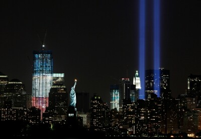
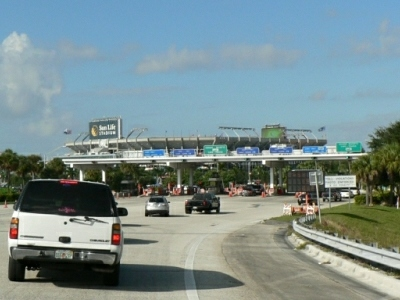

2011 Schedule/Results

Week: 1 2 3 4 5 6 7 8 9 10 11 12 13 14 15 16 17
| Weekly/Yearly Honors | |
|---|---|
| * | |
| * | Most points in a game (year) |
| * | Fewest points in a game (year) |
| * | Most lopsided victory (year) |
| Week 1 NFL Schedule |
|||
|---|---|---|---|
| Itchy Tortugas | 61 | Beer 'n Broads | 53 |
| Rac Seekers | 47 | Pugilistic Monkeys | 30 |
| Rhoads Roadies | 37 | Gonna Git Spanked* | 6 |
| Fixated Yetis | 16 | Georgia Bullheads | 47 |
| Pink Tacos | 17 | Ball Busters** | 74 |
|
September 11 It's been ten years. In tribute, the Tribute in Light from September 10, 2011:  The Itchy Tortugas swallow Beer 'n Broads 61-53 in Mirror Bowl II. Let's see - 300 yards passing with three touchdowns from the QB? Check for Torts (Rodgers 312/3), check for Broads (Stafford 305/3). How about 100 yards rushing with a rushing AND receiving touchdown from the top RB? Check for Torts (McCoy 122/1 and 15/1), check for Broads (Rice 107/1 and 42/1). Perhaps a rushing touchdown from the other RB? Check for Torts (Hightower 72/1), check for Broads (Wells 90/1). Check it out - the only differences are seven more yards for the Torts' top WR (DeSean Jackson 102/1) over the Broads' (Andre Johnson 95/1) and five more kicking points. Checkmate for Torts. The Tortugas hope to make amends for stinking up the joint the last three years (17-28 record) and smell well so far - just don't look too close - while the Broads' loss despite posting the week's third-highest score leaves a bad taste in the owner's mouth, much like watching the quarterback for his beloved Vikings amass 39 passing yards in four full quarters of professional football - Minnesota is THE place where old quarterbacks go to die. The Rac Seekers pound the Pugilistic Monkeys 47-30. The booby bandits open up a can of whoop-ass opening night as Brees whacks the Pack for 419/3 while ex-Georgetown Eagle Crosby kicks six, then cruise the rest of the way as Megatron 'n Quan don 162/3. The beaten baboons experience both sides of Philly brotherly love as Vick passes for two touchdowns while the Eagle D runs a fumble back for a third, but Lynch and Moreno hit the line like a Russian ballet troupe - The Marshoff (33/0) and Knowshoff (22/0) Dancers - and the show closes opening night. The Seekers unveil an amazing aerial assault and, while the league IS shifting more toward the passing side, better generate a greater ground game than this (34/0 rushing average for five backs) lest their playoff pursuit hear the air raid siren while the Monkeys are welcomed to the league with a big unfriendly howdy-do but can at least temper the loss with the fact that their winning percentage can't get any worse - something only a math teacher could appreciate. Rhoads Roadies rap Gonna Git Spanked 37-6. The ISUs with issues place their eggs in the Chief Bill basket and almost end up with poopé soufflé in their lingerie as Cassel only manages one touchdown pass to Charles and Stevie Johnson catches a six with 66 - fortunately, that is way more than is needed on this day. The battered bottoms have fun hitting rock-bottom Week 1 as Schaub leads the way with one measley passing touchdown while Peterson (98/0), Gore (59/0), Maclin (20/0), Collie (0/0) and Kaeding (1 kickoff) are as useful as the forward gear on a French tank. The Roadies stun everyone by leaving the likes of Romo and even Cutler on the bench to start his third-stringer - remember, a man's quarterback is not his Cassel - while the Spanked suffer a Major League moment along the lines of "you can tell how a season's gonna go by the first hitter of the year" when the first kicker off the board blows out his knee on the opening kickoff - are you Kaeding me? Gonna get spanked, no doubt about it. The Georgia Bullheads shave the Fixated Yetis 47-16. The southern comfort seem comfortable on offense as almost everyone gets in on the act, led by Rivers with 335/2 while MoJo earns a rushing touchdown and Bush a receiving one, Wallace cracks 100, Seabass nails a 63-yarder and eight other points and the defense scores six - only VJax lacks. The hairy hominids are F'd when the Falcon passing game is grounded at O'Hare leaving Ryan (319/0) and hence White (61/0) lacking while last year's one-hit wonders Hillis (57/0) and Bowe (17/0) return to Earth in crash-like fashion, leaving BJGE (34/1) as the stud. No, wait, Henery (seven points) as the stud. Dang! Good quarterback, good running backs, good receivers, good kicker, good defense makes one wonder who the owner of the Bullheads paid to log in to Facebook for the draft while the Yetis seem to think that if you draft as many players as possible from the previous year's championship team (three of first seven picks from 2010 Ball Busters) you will win - bzzzzz! Good thing that 11th-round pick on the top D paid off... never mind.
The Ball Busters part the Pink Tacos 74-17. The fig fracturers
fire on all cylinders as Tolbert paves the way with all (three)
of San Diego's touchdowns, Bryant and the Bucs D score touchdowns
while Turner & |
|||
{kind=link}
| Week 2 NFL Schedule |
|||
|---|---|---|---|
| Itchy Tortugas | 38 | Pugilistic Monkeys | 32 |
| Beer 'n Broads | 54 | Rhoads Roadies | 52 |
| Rac Seekers | 54 | Pink Tacos | 40 |
| Fixated Yetis | 43 | Ball Busters | 62 |
| Georgia Bullheads | 31 | Gonna Git Spanked** | 81 |
|
The Itchy Tortugas pummel the Pugilistic Monkeys 38-32 in Let's Each Have A Starter With A Blank Stat Line Bowl. The talcless tacos can't catch herpes at a Paris Hilton sleepover when DeSean (21/0) is gone and the cemetery Gates (0/0) are locked, but LeSean is on with 95/2, Rodgers is pedestrian with 308/2 and Neil Rackers-up 11. The combatant chimps accomplish all through air as Vick tosses two touchdowns before getting touched himself, Jennings and Holmes each catch a TD reception, Forte reels in 117 receiving yards and Bryant boots five PATs. The Itchies are silent (but most likely deadly) as they sneak to the top of the East with a pair of single-digit victories over other divisional contenders (or better, delusional pretenders) while the Pugilistics find themselves all alone in the Eastern basement after enjoying a five-way share of first just two short weeks ago - oh, the longing for just a three-way at this point. Beer 'n Broads pave Rhoads Roadies 54-52. Coors 'n whores give the keys of the Ferrari to Stafford and, well, he doesn't know what to do since he's from Detroit and it's a fine Italian sports car, so... Coors 'n whores give the keys of the Focus to Stafford and he drives home four passing touchdowns while Larry, Andre and Ray all get A's with a touchdown reception each. The psyched Cyclones do well as Romo throws for 345/2 in limited action while Kenny (135/1) and Stevie (96/1) catch well and Darren does almost the same on the ground (72/1) as through the air (71/1), but all is lost when Bradshaw (59/0) is a bad show Monday night. The Beers prove that winning is possible despite wasting four roster spots on Vikings as they boast the best offense but worst defense East of the Mississippi while the Rhoads suffer the consequences of opposing an opponent that can put up more than six points but still have the top defense thanks to last week's Spanked spanking.
The Rac Seekers trim the Pink Tacos 54-40. The jugs jugglers
bask in the Brees blowin' through the bayou for 270/3 while
second pick Mendy (66/1) and third pick Meggy (29/2) all score
touchdowns on The Ball Busters buzz the Fixated Yetis 62-43. The sack crackers are crazy for Brady as he piles up 423/3 - putting him on a pace for 7500/56 this year - while Turner turns out 114/1, Marshall manages 79/1 and Best scores a touchdown both rushing and receiving - even the only person not to score (Burleson) comes close (93/0). The fervid furballs are scum Sunday as Foster (33/0) tightens up, Davis (18/0) is almost invisible and Green-Ellis' day is only saved by a garbage-time touchdown, but Ryan (195/4) and White (23/1) make a run Monday night to make it close. The Balls race out of the starting gate flaunting the top O and D - which is O-D-D - and are on pace to score 1020 points this year (yeah right, see Brady numbers above) so their 10-20 is first out West while the Fixateds settle to the cellar as a polar opposite of their opponents by fielding the second-worst O and second-worst D, which leads the monkey to his favorite saying - thank God for Pink Tacos. Gonna Git Spanked shermanize the Georgia Bullheads 81-31. The red rumps are lights-out as everyone and everything lights up the scoreboard - Schaub (230/2), Peterson (120/2), Gore (47/1), Miles (143/3), Maclin (171/2), Cundiff (7 points) and the Jets defense (safety). The Mason-Dixie pixies set sail down the Rivers with 378/2, but meet with rough seas after that as Wallace (126/1) and Janikowski (5 PATs) are the only others to score - gotta love Reggie's 18 yards rushing and 3 yards receiving, that is one unused Bush *cough* Hillary Clinton *cough*. The Gonnas prove what a yo-yo the owner is by registering what is likely the lowest and highest scores of the year in the first two weeks but face a stiff challenge ahead now that Austin is Miles away from the playing field while the Georgias go with the hot hand - from last week - and bench VJax's 17 points in favor of Welker's zero (VJax had zero last week while Welker had 17), although those points are chump change in the midst of a 50-point beatdown. |
|||
| Week 3 NFL Schedule |
||||||
|---|---|---|---|---|---|---|
| Itchy Tortugas | 49 | Fixated Yetis | 41 | |||
| Beer 'n Broads | 36 | Rac Seekers | 56 | |||
| Pugilistic Monkeys | 10 | Rhoads Roadies | 24 | |||
| Georgia Bullheads | 42 | Pink Tacos | 17 | |||
| Ball Busters* | 57 | Gonna Git Spanked | 41 | |||
|
While the status monkey is usually too busy during the regular season to deal with JPG embellishment in tribute to enthralling NFL stories, some are just way too juicy to pass up. So, without further ado...
The Itchy Tortugas spook the Fixated Yetis 49-41. The chafing chimis are chafed when "the best late-round pick ever" Tate abates scoring (82/0) while new-acquisition Devery is deficient (62/0), but Rodgers (297/3) and McCoy (128/1) earn their top-two picks while Rackers (15 points) and the defense (6 points) save the day. The sucky sasquatch run out of gas when runners Woodhead (21/0) and Green-Ellis (16/0) run like they got the runs while Ryan (330/1) and White (140/1) run mostly on performance points, so a tight end's career day (Finley, 85/3) and Henery (10 points) keep it close. The Tortugas are patting themselves on the back (or someplace a little bit lower and on the opposite side) after three consecutive single-digit wins while the Yets have yet to win as they get neutered, uh, neutralized by the Rodgers-Finley hookups but leave the tying points on the bench (Jacobs) after they give Wood head a try after Hillis went home with a sore throat.
The Rac Seekers brew Beer 'n Broads 56-36. The ta-ta trackers
are all about the tremendous three + D as Drew torches the Texans
for 370/3 and a rare pair of two-point conversions and Calvin
gets his typical two touchdowns and Rhoads Roadies pulverize the Pugilistic Monkeys 24-10. Paul's peons do it the hard way by getting a trio of solo receiving touchdowns from a pair of running backs (Bradshaw and Thomas) and their Buffalo's Johnson to make up for Britt sitting on it and Romo's no-show Monday night. The sparring simians are K-O'd in the first round when top back Forte is a doormat with two yards, Lynch has the game of the year (73/0), Holmes catches 19 yards and Jennings 100 more and Vick calls mommy for a ride home before the game ends for the second week in a row. The Roadies are 2-1 but are the hated schoolyard bully as they can only beat up on teams that score ten or less and face a much tougher challenge next... wait, never mind, they get to munch on Pink Tacos, while the Monkeys are beating themselves silly over owning the league's worst offense as they manage to score less than even those withered Pink Tacos. The Georgia Bullheads split the Pink Tacos 42-17. The confident confederates earn the W by unleashing their W receivers upon the world as Welker hauls in 217/2 on 20 targets and Wallace adds 144/1, which is a good thing because both the Rivers (266/0) and Bush (24/0) dry up. The organ grinders smell like ground tuna after their top back (Chris Johnson, 21/0) and top receiver (Wayne, 24/0) go AWOL and take Witten (60/0) with them, so Bradford (166/1) and Fred Jackson (74/1) are all that's left to defend the fort. The Bulls are looking good and that's no bull, and it helps when you can field someone targeted more than Bin Laden in Operation Neptune Spear while the lethargic Tacos are already hearing the home crowd chanting "Sink the Pink" as they have been outscored by almost 100 in just the first three games - seems fitting for a Pink Taco to get scored on early and often. The Ball Busters shank Gonna Git Spanked 57-41. The nut knockers put up the week's high score despite 34/0 from both backs combined as Brady lights 'em up again with 387/4 - half of those TDs go to the Gronk (100/1) - and son² (Jason Hanson) kicks four FGs and two PATs. The beaten behinds surge around Shaub as he mauls Nawlins with 373/3, but other than that there's only Cundiff (13 points) and Peterson (78/1) as Gore (42/0) and Maclin (69/0) get dinged and Austin (DNP) is just plain absent. The Busters remain the only undefeated team out West but are following a terrible trend as the number of scoring starters has gone from seven to five to three while the Gonna get going - in the wrong direction - as the owner misreads or ignores the injury report and sticks with a guy who's out until mid-October just because he scored three touchdowns last week. |
||||||
| Week 4 NFL Schedule |
|||
|---|---|---|---|
| Itchy Tortugas* | 57 | Ball Busters | 45 |
| Beer 'n Broads | 24 | Gonna Git Spanked | 34 |
| Rac Seekers | 53 | Fixated Yetis | 34 |
| Pugilistic Monkeys | 46 | Georgia Bullheads | 33 |
| Rhoads Roadies | 19 | Pink Tacos | 32 |
|
The Itchy Tortugas fry the Ball Busters 57-45. The flatulating frijoles cover Lambeau in sticky white goo (NOT wet snow) when Mr. Rodgers blows his load all over the neighborhood with 408/4 through the air and two rushing touchdowns for a grand total of 41 points - the rest of team just plain blows. The cherry chokers have a nice balanced attack as Brady (226/2), Turner (70/2), Nicks (162/1) and Hanson (2 FGs, 4 PATs) all score in the 10-12 range, but it's just not enough this day. The Tortugas take down the league's top offense but are now vulnerable to defeat over the next few weeks as they go through a lengthy refractory period - especially at the owner's advanced age - while the Balls part with perfection but have only their beloved Broncos to blame as they couldn't stop St. Mary's School for Blind Girls from running up and down the field on them, let alone someone the likes of Aaron Rodgers. Gonna Git Spanked drown Beer 'n Broads 34-24. The bruised bums aren't much to look at as their top back (Peterson, 80/0) and receiver (Maclin, 74/0) are blanked and Schaub's just a bit better (138/1), but Bush pounds one in (26/1), Rice rises from the ashes (79/1) and the kicker (10 points) and defense (pick-six) top the scoreboard. Schlitz 'n tits are given fits as a pair of Fitz (gerald, 102/0 patrick, 199/0) aren't fit to start and Andre (36/0) isn't fit to finish, so rushing touchdowns from Blount (127/1) and Rice (66/1) are mostly it. The Spanked rise back to .500 but are lucky to have drawn a pseudo-bye this week as you won't win many games when your leading scorers are your kicker and defense - good thing Pink Tacos are on the menu for next week - while the Beer's owner gives credence to his nickname as he starts a quarterback that scores zippy after benching the much-ballyhooed Stafford (240/2) - heck, even that ol' geezer McNabb (202/2) could have won the game. The Rac Seekers butch the Fixated Yetis 53-34. The bust bus are Raven about their defense after it picks up two Mark Sanchez fumbles and picks off one errant pass and return all three for touchdowns - oh, and Calvin (96/2) and Drew (351/1) have somewhat less-stellar days. The abysmal abominables are happy to see Arian back at full strength (155/1), but the rest of the team requires extra strength Tylenol as Henery kicks 11 points with two missed FGs and Ryan (291/1), White (78/0), Hillis (46/0) and Finley (28/0) add little else. The Rac thoroughly enjoy the dirty Sanchez they receive Sunday night as they remain undefeated and tied for first in the East but pray that smell coming from above their lip doesn't spread as they have beat up on teams with a combined 3-13 record while the Fixated are now the lone remaining winless team as they assume the position of league whipping boy, trailing even the lowly Pink Tacos by a full game - eat that!
The Pugilistic Monkeys throw poop at the Georgia Bullheads 46-33
in the 2011 Contention For Atlanta Domination Bowl. The
assaulting apes get A's from their F's as Forte runs amok with
205/1 and Freeman tacks on a passing and rushing touchdown Monday
night - throw in Jennings (103/1) and Bryant (12 points) and the
no-shows from Chandler (8/0) and Spiller (12/0) are no-biggies.
The antebellum asylum get a lot (158/1) from a little (Welker)
and a little bit more from Rivers (307/1), Janikowski (7 points)
and the defense (6 points), but suffer when their Bush (50/0)
loses its MoJo (84/0) and Mike Wallace (77/0) refuses to leave
the set of 60 Minutes. The Pugilistics need to get bedded
four times before popping their AFFL cherry or, as the owner
refers to it, get off the schneid, while the Georgias fall back
to .500 and are nuts to keep playing around with an old useless
Bush as they strike fear into nobody when led by a
The Pink Tacos slide past Rhoads Roadies 32-19. The new phonebook's here! The new phonebook's here! Wait, uh, the Pink Tacos win! The Pink Tacos win? Yes, it IS more unexpected than the Pugilistic Monkeys winning. The downy caves use their Colt-45 (his name is Colt, his IQ is 45) to blaze a trail to victory with 350/1 while Witten (94/1), FJax (66/1) and my-Bironas (7 points) got his back. The lame from Ames stink to high heaven as even the starters who score do it in a stinky way - Bradshaw and Moss both nail 39/1 - enough said about this horrible effort. The Pink stun everyone by nailing a win before Week 10 as their Johnson is slowly starting to rise (up to 3 now - probably the most the owner can hope for) but need to temper the happiness with the fact that their only redeeming quality is Fred Jackson of the Buffalo Bills while the Rhoads are roadkill after benching Romo (331/3) for Cutler (102/0), and the panic from sucking so much and losing so many players to injury has forced the owner to make his first transaction since 2004 - hope Mrs. owner doesn't find out about the $2 expenditure. by Frank Marullo"The Itchy Tortugas fry the Ball Busters 57-45" except for Rodgers, "the rest of team just plain blows ." This week the Torts BACKUP QB outscores all the QB on the Ball Busters' team...... COMBINED! Half of the Balls get busted as 1 RB and 1 WR put up 0s and had their kicker not had his most productive day since his visit to the sperm bank, the game would not have even been close. Looks like the Brady Bunch may be calling Alice for some advice as their Balls get "Marsha, Marsha, Marhsa"'d by the Torts and their Top Gonad faces a stingy defense this week at Fat Rex's buffet dancing on Revis Island. Without the leagues top scorer the Busted Balls seem pretty deflated. All is not lost for the deflated testicles as they face the cream puff Pugilistic (or is it puke a listc?) Monkeys who's win total equals the number of rectums they have and the Total wins of the entire hapless West is only 8 games. Last time I checked, the Scratchy Sack was undefeated? |
|||
| Week 5 NFL Schedule |
|||
|---|---|---|---|
| Itchy Tortugas | 42 | Beer 'n Broads | 28 |
| Rac Seekers | 49 | Rhoads Roadies | 20 |
| Pugilistic Monkeys | 11 | Ball Busters | 33 |
| Fixated Yetis | 37 | Georgia Bullheads | 40 |
| Pink Tacos | 49 | Gonna Git Spanked | 67 |
|
After last week's awesomely humorous contribution, the status monkey offered his authoring job to the esteemed Mr. Marullo but alas, the offer was turned down. Still, the writing was so powerful, so creative, the monkey will try to emulate it so that its sheer entertainment value can live on at least one more week... This week the Torts BACKUP QB scores the same as Marino, Favre and Elway... COMBINED! And those are HOF QBs!!! Half of the Beer get drowned as 1 RB and 2 WR (that's right, Frank, half of 6 is 3, NOT 2) put up 0s and had their kicker not had his most productive day since milking his Frank & Beans, the game would not have even been close. The Beer seem flat and may be calling August Busch for advice after getting triple hopped by the Torts. Without the teams biggest Staff the Brewed Beers seem pretty flat. The Torts are the best ever as they remain undefeated while the total wins of the entire hapless opponents is only 7 games and it gets better as they face the ran-over Rhoadies who's win total equals the length of Franks' Frank and/or number of Beans.
The Itchy Tortugas tap Beer 'n Broads 42-28 in a rare 100%
Efficiency Bowl. The boisterous burritos belly-up to the bar and
order a Roy Rogers to toast their quarterback, who again leads
all drunks with 396/2 while the twin Eagle Seans - Le 80/1 and De
86/1 - indeed look alike and Willis earns a hard six - 125 yards
plus two-point conversion rushing. Sam Adams 'n madams are
starting to behave like Milton Waddams as LeGarrette (34/0) and
Larry (66/0) are lousy, a receiver (Harvin) gets more rushing
yards (12) than receiving (11) and Matthew (219/2) comes up 81
yards and two touchdowns short of pulling it out Monday night.
The Tortugas beat up another The Rac Seekers plow Rhoads Roadies 49-20. The twin peak pilgrims pile it on as Drew throws darts for 359/2, Mason kicks four FGs and one PAT, Calvin catches *GASP* only one touchdown on 130 yards, and Shonn scores again, matching his entire 2010 touchdown total (two) in Week 5. The Trice mice are meager as their leading non-QB, non-PK scorer is Ahmad, who manages to run in a two-point conversion - oooooh - while McFadden (51/0) runs in nothing, Steve Johnson (29/0) and Mike Williams south (28/0) get yardage close to their age and Jay is, well, Jay Cutler (249/1). The Seeks remain among the ranks of the undefeated after beating their first team with multiple wins on the season, bringing the record of their opponents up to an amazingly pathetic 5-20 - which perhaps explains why they can win despite starting a receiver who tallies -4/0 - while the Roads have scored 24, 19 and 20 over the past three weeks - oooooh - but can at least write off some charitable donations on their 2011 taxes as they have given two of the three one-win teams their only victory - how generous!
The Ball Busters tame the Pugilistic Monkeys 33-11. The pouch
poachers are sick with sixes - but nowhere near as sick as
Gronkowski during pregame and first half - as Turner (56/1),
Ingram (32/1), Nicks (65/1) and Hanson (1 FG, 3 PATs) all sink
six while Brady sinks six plus three performance points on his
321/1 day. The grappling gibbons glower from the get-go when
their Freeman (187/0) is locked away in a San Francisco prison
for not paying his Bills, even though they are
The Georgia Bullheads prune the Fixated Yetis 40-37. The
rebellious rebs wave bye to their Bush and play with it anyway
when the owner becomes the first this year to not turn in a
lineup, but the other starters who are present pull
through led by Seabass (13 points), Rivers (250/1 and a rushing
touchdown), MoJo (85/1) and Wallace (82/1). The hairy Marys are
quite contrary - to winning - as Matt (167/1) only hooks up
significantly with Roddy once (50/1), Jermichael is blanked and
Arian's claim to fame is 116 yards receiving out of the
backfield, so it's BenJarvus'
Gonna Git Spanked slam the Pink Tacos 67-49. The pummeled
padding pile it higher and deeper as All Day has his way with 122
rushing yards and three touchdowns and the only functional
Manning passes for 420/3, then Maclin (54/1) and Gore (125/1)
pile on even more. The jam pots reluctantly hire a Painter
(277/2) to redo their ugly, run-down |
|||
| Week 6 NFL Schedule |
|||
|---|---|---|---|
| Itchy Tortugas | 42 | Rhoads Roadies* | 50 |
| Beer 'n Broads | 19 | Georgia Bullheads | 20 |
| Rac Seekers | 33 | Pugilistic Monkeys | 19 |
| Fixated Yetis | 20 | Gonna Git Spanked | 42 |
| Pink Tacos | 32 | Ball Busters | 38 |
|
Rhoads Roadies scratch the Itchy Tortugas 50-42. The bold cardinal and gold are mad about Ahmad as he rides around on Buffalo all day and ends up with 104/3 and a bad case of butt sores while Tony (317/1), Darren (91/1) and Stevie (39/1) contribute touchdowns in a singular fashion. The rolled tacos welcome back Marques (118/1) from a collarbone break and say goodbye to Felix (14/0) with a high ankle sprain, so Aaron is exactly 50% of the offense with (310/3) - all in the first half - while LeSean (126/1) adds on most of the rest as DeSean is silent (46/0) and Rackers barely audible (2 PATs). The Rhoads are smack-dab in the middle of the Eastern standings after knocking off the previously-unbeaten Torts thanks to the week's top offensive output, and will need similar results next week when they face the league's top offense - wait, never mind, Brady's on a bye - while the Itches see their dreams of matching the '72 Dolphins dashed on the rocks but can at least take solace in the fact that they wouldn't have won no matter what lineup they submitted - well, at least the owner can take solace. The Georgia Bullheads ferment Beer 'n Broads 20-19 is Bitch Slap Bowl X. The Peach State ingrates wave bye to their Rivers - much like Central Texans did months ago - and are left with nothing but a pair of receiving touchdowns from Wallace and Welker en route to a well-deserved 19-18 defeat... until old man Donovan keels over in the end zone Sunday night and is jumped by a Bear, giving up two the hard way. Boozers 'n losers raise the white flag up the staff as Matthew is just about it with 293/2 while the rest of the team is s_it - Rice (101/1), Starks (49/0), Harvin (78/0) and Manningham (56/0) aren't worth a hill of beans while the bench (no points from any back or receiver) smells like the after-effects of a baked bean dinner. The Georgias take ignorance to a whole 'nother level by passing on a lineup for the second straight week and not playing a passer, but at least they boost the sale of Men Without Hats' CDs with their rendition of the Safety Dance while the Beers must feel like they are sitting on the Viking's horn as they are 1-5, Minnesota is 1-5 and McNabb costs them this game - at least they get to face the one team with a worse record next week.
The Rac Seekers box the Pugilistic Monkeys 33-19. The breast
browsers aren't breathtaking with a duo of dimes from Brees
(383/1) and Mendenhall (146/1) and a few pennies (good yardage
without scoring) from Boldin (132/0) and Calvin Johnson (113/0),
but fortunately breathtaking is far from needed on this day. The
pugnacious primates are pungent when Newton discovers the Theory
of Rookietivity - first-year players cannot be consistent - with
a lone rushing touchdown while Bryant is the leading scorer with
seven points and running back Spiller doesn't register a single
carry. The Racs remain the only unbeaten despite tallying their
season low by 14 - yet still win by 14 - as they whoop up on
their fifth zero or Gonna Git Spanked yank the Fixated Yetis 42-20. The drummed derrières look flustered in the cheeks when Eli does nothing but hand off the ball, Austin doesn't go the extra Miles (74/0) while Maclin barely does (101/0), and Gore scores a touchdown on 141 yards rushing while Peterson scores one on 102 less, but the kicker (4 FGs, 3 PATs) and defense (pick-six) are well over half the offense and, more importantly, more than the entire opponent's offense. The humbled bumbles stumble out of the gate and never regain their balance as Arian (49/0), Peyton (14/0), Roddy (21/0) and Vernon's (8/0) combined efforts don't crack 100 yards, so Matt's passing and rushing touchdowns plus some Henery kicks are it. The Gonnas win their third straight against teams with a combined 2-16 record but better give the candy back to the baby as their next three opponents are 12-6 while the Yetis continue to play like Bettys as they are small in all aspects of life, from bedroom to field and even on the bench - reference backs Choice (14/0), GreenEllis (58/0) and Woodhead (7/0) and receivers Finley (20/0) and Lewis (29/0). The Ball Busters bop the Pink Tacos 38-32. The teste trouncers Turner Michael loose and he parades over pawless Panthers for 139/2, but with the Torain stuck in the station (22/0) and Nicks a little bit short (96/0), it all boils down to a 32-32 tie that is broken by Brady's touchdown pass with 0:22 left in the fourth - quality, not quantity, this week. The furry hoops don't know if their quarterback is the real McCoy or not after Colt fires 215/2 but it seems like an All-Pro performance - by his standards - while Fred (121/1) continues his run to the Pro Bowl and Pierre (52/0) and DeAngelo (44/0) run out of gas. The Balls barely remain in first out West but with their best quarterback and receiver on byes and their Best concussed, the owner makes plans to flee to Miami to avoid next week's impending pounding while the Pink fans, er, fan, is starting to ask "Which one's Pink?" so he knows where to direct the egg barrage as the team continues to collapse with the division's worst offense and league's worst defense - with those gaping holes, players can score on these Pink Tacos at will. |
|||
| Week 7 NFL Schedule |
||||||
|---|---|---|---|---|---|---|
| Itchy Tortugas | 52 | Gonna Git Spanked | 29 | |||
| Beer 'n Broads | 15 | Fixated Yetis | 52 | |||
| Rac Seekers* | 63 | Georgia Bullheads | 38 | |||
| Pugilistic Monkeys | 43 | Pink Tacos | 13 | |||
| Rhoads Roadies | 21 | Ball Busters | 41 | |||
|
While the status monkey is usually too busy during the regular season to deal with JPG embellishment in tribute to enthralling NFL stories, some are just way too juicy to pass up - especially when it's THIS juicy. So, without further ado...
No scoop this week. The status monkey and troop flew down to Miami for an extended weekend to check out the Ball Busters' one-week starting quarterback in person, and found the Mile-High Messiah on pace for 168 points... over the last five minutes of the game, but still enough to go from 15 down to overtime. Helluva time, but now the monkey is way behind with his other, paying job. Click on the picture to view the gallery.  However, kudos must be sent to the Fixated Yetis who finally break into the win column after their grand Arian stops running rallies and starts running, period. Kudos must also be sent to the Itchy Tortugas who finally move into first place... in the KOD race, by putting two backs on I-R and breaking a third's hand - all in a period of three hours - in what the owner is now referring to as Sunday, bloody Sunday. |
||||||
| Week 8 NFL Schedule |
|||
|---|---|---|---|
| Itchy Tortugas | 32 | Pugilistic Monkeys* | 53 |
| Beer 'n Broads | 42 | Rac Seekers | 31 |
| Rhoads Roadies | 11 | Gonna Git Spanked | 45 |
| Fixated Yetis | 22 | Ball Busters | 21 |
| Georgia Bullheads | 25 | Pink Tacos | 18 |
|
The Pugilistic Monkeys abrase the Itchy Tortugas 53-32. The antagonistic anthropoids jump from tree to tree with glee after Cam shafts the Vikes for 290/3 passing while receivers Scott pays the Bills (35/2) and A.J. - once Green with envy of starters - finally gets his chance and responds with 63/1. The pequeño taquitos are thankful LeSean is the real McCoy (185/2), but with their All-Pro QB on a bye they hand the keys of the Porsche over to Alex Smith and he proceeds to wrap it around a tree with 177/1, taking Murray (74/0), Colston (50/0) and DeSean Jackson (31/0) along for the ride - at least the owner can claim his defense obtained two points illegally. After winning their second straight, the Monkeys are seen happily hurling poop at each other in the locker room in a gesture symbolic of what happened to their opponents on the playing field earlier while the Itches are seen just plain hurling in the locker room as the owner gets his comeuppance for knowingly picking up a man in San Francisco because he blows - and spending only $2 on the act... that's just nasty. Beer 'n Broads deflate the Rac Seekers 42-31 in End Of Streaks Bowl I. The owner of Leinies 'n hineys comes off as genius for starting a Harvard graduate at quarterback when he scores a low A with 262/2, but he's even more thankful for Rice harvesting a 63/3 crop against an arid Arizona defense. The hooter hunters go bust when their first pick goes kablooey in St. Looey with a mere 269/1 - note to owner: the Brees rarely blows in a dome on the road when the opponent's groundskeepers keep the doors closed - so it's up to the kicker to lead everyone with 11 while Calvin Johnson kicks in another 125/1. The Broads sober up and kick their five-game losing habit but better shore up their defense as they give up the most points in the East - at least there's nowhere to go but up... from the cellar - while the Seeks see their seven-game winning streak end with far less fanfare than the Kardashian-Humphries marriage - even though it probably lasted longer - but were at least in it up until the bitter end when Mathews gets his balls busted Monday night and the '72 Dolphins pop the champaign. Gonna Git Spanked steamroll Rhoads Roadies 45-11. The bruised butts go schizo as the quarterback (Schaub 225/1 passing, 2/1 rushing) and running back (Peterson 86/1 rushing, 76/1 receiving) display split personalities while the kicker (Cundiff 3 FGs, 3 PATs) believes he is an offensive juggernaut - regardless, any of the three are too much for the opposition. The State stooges' act like Larry, Moe and Curly on the field as Bradshaw (50/0), Sproles (16/0), Stevie Johnson (57/0) and Mike Thomas (24/0) are all slapstick and no scoring, so it's left to Romo (203/1) and Gostkowski (5 points) to run the show which is sure to be cancelled after one week. The Spanks have the audacity to play with their Bush even though it's not ready to go - and won't be for another week - but are blessed with an opponent that's nowhere near ready to go in any aspect while the Roads do what they can with what they got, with results as impressive as Tiny Tim's cup size, as they have eight rostered players who play - seven in the starting lineup and the backup QB - which leaves zero choices for RB, WR and PK. But hey, at least it results in 100% efficiency! The Fixated Yetis tickle the Ball Busters 22-21 in Bungle Bowl I, a.k.a. Replace A Bygone Falcon With Cincinnati Crap Bowl. The muted bigfooted's owner is lame enough to draft both quarterbacks with Week 8 byes, but a shrewd $2 investment in Andy Dalton (more like choosing the last man standing because, well, he can stand) pays off with 168/2, which complements Foster's 112/1 while Bailey's one PAT is the winning margin. The gonad guerrillas are nuked before the game starts when three running backs pull up lame, forcing the owner to spend $2 on Bernard Scott (more like choosing the last girl to dance because, well, she's the ugliest) who returns nothing (76/0) on the investment while Torain (14/0), Nicks (67/0) and Graham (39/0) are busts too. The Fix are the West wurst that knockwurst-off the best but have to have that queasy "yeah, we won but" feeling about the way things transpired - like getting laid for the first time in a long time and then waking up in the morning next to Snooki - while the Busts experience their first "woulda won if I listened to my husband and drafted Calvin instead of Hakeem" moment - heck, they woulda won if they listened to the Yeti owner himself last week when he wrote "almost reeled in Maurice Morris (58/1) due to my very limited RB choices, but I figured I may as well throw him back in the water for someone that actually has a shot at the playoffs." What a morale booster that guy is, eh? The Georgia Bullheads crack the Pink Tacos 25-18. The lax greybacks certainly lack with their W's (Wallace and Welker) catching like L's (70/0 and 39/0) and Jonathan Stewart "running" like Jimmy (49/0), but MoJo sneaks in a rushing touchdown on 63 yards and Big Ben chimes in for the win with 365/2. The rebuffed muff suffer through menopausal failure as their best player is once again the kicker - this time with a full 50% of the offense - while Colt (241/1) gets all his points in garbage-time as usual, the second-overall pick (CJ2K) is stuffed as usual (34/0) and Garcon (66/0) and Witten (28/0) deserve de nada. The Bulls are rewarded with victory despite getting 64% of their offense from the player identified simply as "Scumbag (Ben)" by the owner in the official lineup - better watch out for that motorcycle in the rearview mirror, Mr. Bennett - while the Tacos just keep smelling more and more like dead tuna as they now stand alone with the league's worst record and really need to start thinking about cutting off their Johnson and go dancing with the Jackson 5 - minus three - instead.
Editor's Note: My how the mighty have fallen. Or is it the
meek shall inherit the Earth? Both seem accurate this week as
all three |
|||
| Week 9 NFL Schedule |
|||
|---|---|---|---|
| Itchy Tortugas | 52 | Rac Seekers | 27 |
| Beer 'n Broads | 27 | Rhoads Roadies | 26 |
| Pugilistic Monkeys | 23 | Ball Busters | 40 |
| Fixated Yetis* | 56 | Pink Tacos | 15 |
| Georgia Bullheads | 28 | Gonna Git Spanked | 26 |
|
The Itchy Tortugas smack the Rac Seekers 52-27 in Beasts Of The East Because Other Three Are Leasts Bowl. The Frito banditos welcome back the league MVP with open arms and he comes through with a typical four passing touchdowns while Rackers assumes his typical position as second-leading scorer with a dozen and Gates and McCoy chip in single touchdowns apiece. The stack stalkers are stymied as Anquan, Victor and Shonn all have a unique first name but a common stat line - zero points - so a below-average day for Drew (258/2) and one other touchdown by Rashard (52/1) doesn't bode well for the team. The Torts pull into a first-place tie with the Seekers after surpassing the Ball Busters and Seekers in consecutive weeks to take over as the league leader in offense - nowhere to go but down - while the Racs look lost without their Johnson and better address their Bobbittization quickly via reattachment before things get out of hand and they find themselves on the outside looking in come playoff time. Beer 'n Broads goad Rhoads Roadies 27-26 in Owners That Start An Injured Player Don't Deserve To Win So This Shoulda Been A Tie Bowl. Shiner 'n Sheilas are sparkling to see LeGarrette and Andre check out of the hospital... well, LeGarrette (72/0) anyway, so the offense - what little there is - flows through Fitzpatrick (191/1), Fitzgerald (43/1), Ray Rice (43/1) and Carpenter (1 FG, 4 PATs). The flailing farmers give Bradshaw the starting nod even though he's nodding-off in the recovery room, and when both receivers are shut down all that's left is Romo (279/2), Sproles (57/1 receiving) and Gostkowski (2 FGs, 2 PATs). The Beers use the Roadies' face to step out of the dungeon and, thanks to the Ball Busters spanking their Monkeys, are now tied up with two others in the basement of Hotel East while the Rhoads have dropped three straight as their backfield continues to drop like flies with their top three picks out - no worries, the only other healthy back (Thomas, 12/0) wouldn't have helped either. The Ball Busters plant the Pugilistic Monkeys 40-23. The rock sockers like what they see in the mirror when both backs look about the same (Tolbert 83/1, Turner 71/1), both receivers look even more the same (Graham 78/0, Bryant 76/0) and the quarterback and kicker (Brady 342/2, Akers 13 points) score alike. Despite semi-nonexistence from Chandler (24/0) and Moreno (4/0), the gladiating gorillas are still in it when set up for a big Monday night title fight of Vick vs Forte, but the only significant punch landed by either is when Forte fumbles and the team defense runs it back for six. The Balls remain on top - just the way the owner likes it - but with Brady struggling it is because of the league's top defense which has staked the team to a 144-point differential while the Pugilistics keep finding ways to beat themselves as they perfect the art of choosing the quarterback who will score the least week after week after week.
The Fixated Yetis ravage the Pink Tacos 56-15. Throw out the
receiving corps and everyone gets involved in this scoring fest
for the rumbling rakshasa as Ryan makes a noteworthy appearance
with 275/3, the defense takes the charge out of Rivers with a
pair 'o pick-sixes, Bailey kicks eleven and Foster (124/1) and
Jacobs (72/1) both add single-digit sums. The fuchsia fuzzy
bunnies run and hide in their burrow as the countdown to
The Georgia Bullheads pull Gonna Git Spanked 28-26 in Owners That Start Two Bye Players Don't Deserve To Win Unless Their Opponent Is A Bye Bowl. The inbred kindred experiment with a new formation - the empty backfield, but only due to the owner's ineptness - and the remaining players fill in adequately with Roethlisberger (330/1), Kasay (2 FGs, 2 PATs), Wallace (68/1) and Welker (136/0) all making minimal contributions. The crimson cheeks order some odd offerings as Schaub rushes for a touchdown, Michael Bush catches a touchdown, and nobody else gets any touchdowns - fortunately, Cundiff's kicking (3 FGs, 2 PATs) keeps it close. The Georgias go through the motions of turning in a lineup and it comes within 28 seconds of being legit, but the fantasy gods continue to smile on them as they are the only team with a winning record that's being outscored - perhaps the gods are showing well-deserved pity instead - while the Gits better get going because being Spanked while the season is winding down by a handicapper missing two limbs is Gonna send them home early. |
|||
| Week 10 NFL Schedule |
|||
|---|---|---|---|
| Itchy Tortugas* | 50 | Rhoads Roadies | 26 |
| Beer 'n Broads | 38 | Pugilistic Monkeys | 29 |
| Rac Seekers | 36 | Pink Tacos | 19 |
| Fixated Yetis | 36 | Gonna Git Spanked | 25 |
| Georgia Bullheads | 41 | Ball Busters | 40 |
|
The Itchy Tortugas explode Rhoads Roadies 50-26. The flamboyant flautas flaunt another uniquely-named duo - this time in the backfield - as DeMarco downs 135/1 while LeSean lands 81/1 to forge a 26-26 tie going into Monday night - no worries, Rodgers rides to the rescue with 250/4. The almost-dead cornheads turn red as they turn in one of the lamest showings in league history - Sproles (1/0), Bradshaw (DNP), Stevie Johnson (8/0) and Mike Thomas (1/0) can't even hit double digits in yardage and net ten yards combined - but Romo (270/3) and the defense (6 points) manage to push the score into the twenties. The Itches exact revenge for their Week 6 loss, which coincides with the last time Rhoads won, to remain in a first-place tie in the East - although they own the tie-breaker, which the owner gleefully pointed out in a certified letter to the league office - while the Roadies reap what they sow when Mike Thomas, a receiver for the Jaguars, leads all RBs/WRs with 12 yards rushing as they go from 3-3 and full of glee to 3-7 on their way to fantasy football heaven. Beer 'n Broads get soused and win a bar fight with the Pugilistic Monkeys 38-29. Bass 'n ass are full of gas - well some form of superheated, semi-smelly air - as Fitzgerald rises from the ashes to catch 146/2 while Manningham hauls in 77/1 of his own and Stafford AND Rice each throw a touchdown pass. The mauling marmosets give their stud back a try in the passing game too, but the 0/0 result is reflected upon the rest of the team as Newton (212/0), Moreno (52/0) and Jones (9/0) pass on scoring while Forte (64/1), Jennings (32/1) and the defense (pick-six) contribute little. The Broads are looking and smelling much better than their 1-6 beginning but best be wary when their running back leads the team in passing touchdowns and their stud Stafford throws more TDs to the defense (two) than offense (one) while the Monkeys slip their heel on a banana peel as they pick the wrong starting quarterback again and the wrong time of the season to nurture another substantial losing streak to fruition. The Rac Seekers pork the Pink Tacos 36-19 in Top Half Vs Bottom Half Bowl. The mammary mongers are nearly gone when Megatron, Shonn, and Quan get none, but Drew draws 322/2 out of the Georgia Dome and Rashard gets a rare double-dip (44/2) from Paul Brown - ewwww! The cock sockets continue to rocket toward the spiraling-down arms of the Crappy Galaxy as McCoy (218/0), Witten (37/0) and Daniels (31/0) float in zero gravity - guess the owner loves to play with tight ends that put up little resistance - so it's up to Bironas to boot over 63% of the offense. The Seekers win easily despite Calvin's first zero - ah yes, the league freebie is always an easy victory, but the owner is wishing they drew this opponent next week so they could stick it to the Pink Tacos without the Brees in their sail - while the Tacos have the world buzzing "yo quiero Taco smell" as buzzards circle the garbage pit when they become the first team sent home for the holidays before the holidays even begin. The Fixated Yetis outflank Gonna Git Spanked 36-25. The surging sasquatch have White (62/0), Bowe (17/0) and Green-Ellis (8/0) to start off slow, but with Ryan (351/2) and Foster (84/1 rushing, 102/1 receiving) it's away we go. The flogged fannies keep Austin weird - as in starting a receiver listed as out for over a week now is weird - and when Maclin turns in 6/0 and Gore 0/0, there's just too much for Schaub (242/2) and Peterson (51/1) to make up. The Fixateds now own the longest current winning streak after starting off the year with the league's longest losing streak - well, longest until the Pink Tacos get reamed next week - while the Gonnas' playoff run continues to suffer from self-inflicted wounds as the owner suffers from tunnel vision, having the ability to see byes but not an injury report. The Georgia Bullheads eke by the Ball Busters 41-40. The jamming johnnys blow off another lineup but the planets align perfectly as MoJo (114/1) draws the Colt no-go D and the M&M's are tasty - Mike Smith feeds a free FG to Kasay in overtime and Matthew Stafford throws two pick-sixes in under two minutes to the Chicago D. The cojones chokers get 329/3 from Brady bombing the Jets while Jimmy Graham catches 82/1 and Akers kicks a baker's dozen, but victory remains just out of reach - two yards for Marshall (98/0), four for Turner (96/0). The Bullheads suffer from a bullheaded owner yet somehow manage to keep on winning, although he can definitely take one item off his Christmas list since he'll never get a double pick-six gift like this again while the Busters place a substantial bounty on Stafford as they lose their second divisional game of the year by a grand total of two points, but kinda sorta deserve it as they play the one receiver out of seven on the roster that DOESN'T score a touchdown - guess you could say BM was a sh*t pick. |
|||
| Week 11 NFL Schedule |
|||
|---|---|---|---|
| Itchy Tortugas | 35 | Pink Tacos | 23 |
| Beer 'n Broads* | 54 | Ball Busters | 40 |
| Rac Seekers | 11 | Gonna Git Spanked | 25 |
| Pugilistic Monkeys | 31 | Fixated Yetis | 22 |
| Rhoads Roadies | 31 | Georgia Bullheads | 45 |
|
The Itchy Tortugas stuff the Pink Tacos 35-23. The tense tamales are carin' for Aaron yet again as he accounts for over half the offense with 299/3 while Gates (63/1) gets the only other touchdown and McCoy (113/0) gets ample yardage to cover Murray (73/0) and Burress' (64/0) blanks. The fur burgers don't need waxing to reveal how nasty they are as Bradford (181/1) connects with Lloyd (67/1) for one play that nets over half the offense while Witten hauls in a 59-yard touchdown reception and the Jacksons suck when Fred is fragged. The Torts pick the perfect opponent to duel during a down week as they take over the top record in the league thanks to a flat Rac sighting while the Pinks continue their march toward futility as they generate the year's longest losing streak at seven AND their winning percentage falls below .100 as it continues to get closer and closer to the owner's IQ.
Beer 'n Broads baste the Ball Busters 54-40. Ales 'n tails
unfurl the sails and cruise as Stafford enjoys an early-bird
pre-Thanksgiving feast - the putrid Panther pass "defense" - and
goes for 335/5 while Rice boils 104/2 and Fitzgerald flags down
41/1. The scrot scrunchers get a pair of Brady-Gronkowski
hookups and Turner totals 100/1, but the only true noteworthy
note is the rapid turnaround time in the backfield as Morris
spends a whopping 3h27m on the roster and records 29/0 playing
second fiddle to Smith. The Beers win their fourth straight
after a 1-6 start and appear to be sobering up just in time for a
playoff run, but better not count on their QB producing 25% of
his Gonna Git Spanked carve the Rac Seekers 25-11. The arse farces get a smattering of small scores from Eli (264/1), Adrian (26/1), Sidney (35/1) and Billy (7 points) while Frank's in the tank with 88 yards but no score and Jeremy is on medical leave. The silicone searchers see their stud signal caller say sayonara for the week while almost everyone else follows suit - Hasselbeck (124/0), Mathews (37/0), Greene (10/0) and Calvin Johnson (89/0) - leaving Boldin (35/1) to steer the ship... off the edge of the Earth. The Spanks manage to maintain a winning record and are in the midst of the wildcard hunt despite scoring a consistently-poor 26, 25 and 25 points over the last three weeks while the Racs truly blow in the absence of a Brees but now see that obstacle in the rearview mirror as they lead the wildcard race with four laps to go. The Pugilistic Monkeys turduckenify the Fixated Yetis 31-22. The torturing tamarins depend on the double-double as Newton nabs 280/1 plus a two-pointer passing to go along with 37/2 rushing while Bryant kicks 11 points to cover Jennings (6/0) and Moreno's (DNP) odious outings. The furry blurries scurry away when none of Green-Ellis (81/0), Jacobs (21/0), Finley (30/0) or White (147/0) can punch one in, so the team gets punched when Ryan (316/1) and Bailey (2 FGs, 3 PATs) can only nail nine. The Pugilists' win delays the inevitable newbie nullification for one more week as they sit at the very back of the wildcard bus on the same seat with their long-time buddy while the Yetis are appalled that their four-game winning streak is mauled by one of the few teams in the league with a worse record than theirs. The Georgia Bullheads roast Rhoads Roadies 45-31. The Peach State inmates don't debate dat der running backs are da'bom as Benson bags 41/2 while Jones-Drew justifies 87/1 to go along with 280/2 from Rivers, 74/1 from Gonzalez and nine points from Janikowski. The overblown Cyclones roll out Ahmad on his gurney for the third straight week and are further embarrassed when their lil' Stevie (16/0) turns out to be the smallest Johnson in the league, but Tony (292/3) and southern Michael Williams (83/1) keep it somewhat respectable. The Georgias take over sole possession of first for the first time since... ever, as they are 8-3 overall and 6-1 in the division despite still being outscored 390-394 while the Rhoads' five-game losing streak eliminates them as they go from 3-3 and full of glee to 3-8 and laid out straight - perhaps the owner should have thrown himself on the mercy of the court a.k.a. wife to beg for another $2 or at least declare bankruptcy so the team could be sold to an owner willing to spend to field a full squad. |
|||
| Week 12 NFL Schedule |
|||
|---|---|---|---|
| Itchy Tortugas | 40 | Georgia Bullheads | 49 |
| Beer 'n Broads | 13 | Pink Tacos | 29 |
| Rac Seekers* | 70 | Ball Busters | 35 |
| Pugilistic Monkeys | 27 | Gonna Git Spanked | 33 |
| Rhoads Roadies | 32 | Fixated Yetis | 53 |
|
The Georgia Bullheads bulldoze the Itchy Tortugas 49-40. The stoned mountaineers conjur up visions of Harry Potter: The Curse of Too Many Sequels as they battle the evil transaction wizard with Sebastian (6 FGs, 1 PAT) and Wesley (115/2) playing the roles of Hogwarts heroes. The suffering sopapillas seem stunned when Rodgers has an "off" day with a paltry 307/2 and -1 yards rushing while McCoy, Gates and Burress contribute single TDs on yardage in the 30's, 40's and 50's. The Bullheads open up a commanding lead out West but their commander is once again returning to his old ways of NOT turning in lineups - hopefully the team can hold on in spite of this - while the Itchies' loss to their fellow 9-3 opponent costs them the tiebreaker, meaning they do NOT have the best overall record - needless to say, the league office is NOT expecting a registered letter this week.
The Pink Tacos blotto Beer 'n Broads 29-13 in End Of Streaks Bowl
II. The blush bush are up to their old tricks as one
The Rac Seekers sack the Ball Busters 70-35. The chest chasers don't start off great as Megatron is shut down until a garbage-time TD with 0:11 left salvages his day, then everything comes up roses from there as Brees (363/4 plus a rushing touchdown) and Cruz (157/2) light up MNF. The dangler stranglers do start off great as Smith totals over 50 yards in the first quarter then... pulls up lame, Hanson shanks a FG and it's all downhill from there, leaving Brady (361/3) to make the biggest splash - at the least the owner got to pay tribute to her twins by starting Kevin and Jason. The Seekers move back into a first-place tie in the East as they double-stomp their opponents, first on the field then off the field as well by bottom-feeding off their injury woes Friday, while the Busters' three losses to nondivisional foes are all due to huge QB explosions (41, 33 and 34 points) leading to the week's high scores against them - it's like déjà vu all over again! Gonna Git Spanked prank the Pugilistic Monkeys 33-27. The rump roasters are rattled when receiver Rice rushes for 3/0 but passes on any catches and then passes on the rest of his season, but the only-functional Manning erases the 27-16 weekend deficit with 406/2 Monday night. The clashing capuchins get a rushing touchdown from their passer (Newton 208/0), a receiving touchdown from one of their rushers (Lynch 111/0) and a Turkey Day TD from Jennings, but the rest of the team are turkeys. The Gets find the perfect week to not score in the 20's as they end up in a two-way with the Ball Busters for the last wildcard spot and get to challenge them next week for sole possession while the Monkeys are clinging on to the tree of success with only the tips of their fingers as they are three games behind the Spanked and Busters with three to play. The Fixated Yetis jettison Rhoads Roadies 53-32. The burning bigfeet get back on track in the nick of time as their cleverly-nicknamed players produce productive playing time: Matty Light (262/3), Roddy (120/1) and The Lawfirm (44/2). The flamin' Amesmen continue to flame out as they put up a respectable score (by their standards) led by Romo (226/2), Mike Williams (84/1) and Stevie Johnson (75/1) - but still get no respect from the win column. The Fixateds fix their sights on a wildcard spot, although the destination is way off in the distance and the team is running out of time and fuel, while the Roadies have managed to improve their offensive output four weeks in a row and still lose six straight as they can only hope to play the part of spoiler at this point since their season spoiled weeks ago. |
|||
| Week 13 NFL Schedule |
|||
|---|---|---|---|
| Itchy Tortugas | 45 | Rac Seekers | 53 |
| Beer 'n Broads* | 55 | Georgia Bullheads* | 55 |
| Pugilistic Monkeys | 50 | Rhoads Roadies | 25 |
| Fixated Yetis | 40 | Pink Tacos | 28 |
| Ball Busters | 50 | Gonna Git Spanked | 27 |
|
The Rac Seekers salve the Itchy Tortugas 53-45. The tit trappers are tenacious when Brees (342/3), Mendenhall (60/2), Cruz (119/0) and Crosby (8 points) all score yet the team trails by one going into Monday night until Mathews does the unthinkable - scores a touchdown (fourth of year) AND rushes for 100+ yards (third of year), which add up to over 33% of his year-to-date points in one game! The dormant doritos amplify their Aaron-addiction to 62% as he passes for 369/4 against a Giant waste of a defense while LeSean rushes for 84/1 and catches 49/1, but the cheery O's (Plaxico, Antonio, DeMarco) are teary O's (33/0, 70/0, 38/0). The Racs go from one game behind to one game ahead in two weeks and have only a victory next week over the least in the East standing between them and the division crown - and boy are they happy that they can succeed even when their Johnson is the only one not scoring - while the Torts pick the worst time of the year to start their first multi-game losing streak and might want to start by shoring up that defense as it is the worst of the six remaining playoff contenders. Beer 'n Broads match the Georgia Bullheads 55-55 in My High Tie Bowl 2011. Spaten 'n hotties get big yardage and single scores from Stafford (408/1) and Rice (204/1), but it's the very rare appearance of Minnesota on the scoreboard that makes the day as Harvin (156/2), Longwell (3 FGs, 3 PATs) and the defense (safety) all contribute. The Deliverance miscreants get 38/2 from Wallace and 100/1 from Reggie Bush but trail 55-31 after Sunday's slate when Rivers rolls to 294/3 and Jones-Drew does it both ways with 97/0 rushing and 91/receiving - so close, so close but yet so far. The Beers manufacture a memorable method for getting erased from the playoff picture by getting into the first-ever tie between teams with the week's high score, and can look at it as unlucky (would have won with three more receiving yards from Andre) or lucky (would have lost without gift safety) while the Georgias bag the franchise's first postseason berth, which is amazing in itself because they could win out and at 11-3-1 still not get the franchise's overall winning percentage out of the red. The Pugilistic Monkeys junk Rhoads Roadies 50-25. The mauling mandrills are tickled Thursday as Beast Mode feasts on Philly flubs with 148/2 while the Newton has a fun day Sunday almost matching the opponent's output with three rushing touchdowns on 54 yards and 27 receiving yards... oh, and a passing touchdown, you know, what a quarterback is supposed to do. The Cy dies give it the ol' college try, but with this roster they probably would lose to most college teams as Romo, Stevie Johnson and Sproles all score single touchdowns and Gostkowski leads all comers with seven. The Pugilistics win the battle but lose the war as they double up the division wimp but still get whipped from the playoffs while the Rhoads have a seven-game losing streak to match that of their golfing buddy, the Pink Tacos, which is ironic since the two spent the year shanking calls and leaving divots all over the gridiron. The Fixated Yetis ream the Pink Tacos 40-28. The shaggin' shaggies score some from lots of spots as Foster (111/1), Bailey (7 points), Ryan (267/1), White (51/1), Green-Ellis (14/1) and the GB D (pick-six) all get in on the action - only Vernon (32/0) doesn't mount any offense. The pulverized punani play putrid paced by Bradford (DNP), DeAngelo Williams (29/0), Witten (47/0) and Lloyd (34/0) - only the titanic twosome of Chris Johnson (153/2) and Bironas (3 FGs, 2 PATs) tally. The Yetis cling to the glacier's edge as their playoff hopes continue to melt around them - blame it on Gore, if he hadn't invented global warming all would be well in the Great White North - while the Pinks stink except for their nice pair of Titans as they now have to close out the season .500 to NOT have the worst season record of all time as they suck so much Linda Lovelace is getting jealous. The Ball Busters crank Gonna Git Spanked 50-27. The jewel jousters go bonkers for Gronkers as the owner's fellow Zona alum notches two receiving touchdowns - Brady's both - and one "rushing" touchdown (pass later determined to be a lateral) while Akers continues his march for MVP with 14 more points. The battered bottoms are planning for Manning to lead the way and he's off and running with 347/3 but the rest of the squad is waning as Gore is a bore (73/0), Bush is bushed (18/0), Collie is collared (70/0) and Smith is smited (32/0). The Balls right the ship after playing like sh*t for the last three weeks and now control their own destiny - although getting hit with three weeks' worth of high scores doesn't seem to leave much to be destined for - while the Gonnas need to win out and hope for help as this loss means they've been swept, so they need to go from a game behind the Busters to a game ahead with two games left. |
|||
| Week 14 NFL Schedule |
|||
|---|---|---|---|
| Itchy Tortugas | 59 | Fixated Yetis | 49 |
| Beer 'n Broads | 47 | Pugilistic Monkeys | 45 |
| Rac Seekers | 34 | Rhoads Roadies | 52 |
| Georgia Bullheads* | 61 | Ball Busters* | 61 |
| Pink Tacos | 11 | Gonna Git Spanked | 37 |
|
The Itchy Tortugas trap the Fixated Yetis 59-49. The bakin' beans fire away at a torrid pace with a trio o' dozens from Rodgers (281/2), McCoy (38/2) and Gates (68/2) while Colston outgasses them all with 105/2 after being on the receiving end of all of Brees' manlove. The dispatched sasquatch are flyin' when Ryan puts forth his year's best effort with 320/4 - one of them to White - but the rest of the team is dyin' as Foster (41/0), Green-Ellis (19/0) and Finley (0/0) are left cryin' while the defense scores the only other touchdown. The Itchies put a lid on their two-game skid and are now tied through three tie-breakers with the Rac Seekers atop the East - uh-oh, that brings points scored into play, better just win and get it over with - while the Fixateds lose both their shot at the playoffs and finishing over .500 in one fell swoop as their season turns to poop because the team's top four (Foster 10->18 , White 6->10, Hillis 2->13, Bowe 4->15) needed to score a lot more to match last year's touchdown totals. Beer 'n Broads junk the Pugilistic Monkeys 47-45 in Eliminated Last Week But Still Trying Hard Bowl. Much like in the bedroom, brews 'n floozes are small yet consistent as Stafford (227/2), Rice (103/1), Blount (74/1), Fitzgerald (149/1) and Harvin (69/1) all measure between two and one while Longwell (4 PATs) tops out at four. The languished langurs lament when Marshawn's 115/1 on MNF isn't enough to overcome the 11-point deficit left behind by Cam (276/2) and Julio (104/2) - looks like the owner doesn't want an A.J. (59/0), a C.J. (46/0) or any kind of a J. The Broads are locked into third place in the East, which is not a good place to be (locked up in the middle East) but are the only team in the league that has a shot at finishing at exactly .500 - how average - while the Monkeys better not take their foot off the pedal just yet because if they lose next week and Rhoads Roadies win they'll wind up in last place - never mind, start coasting, the Pink Tacos are coming to town. Ho ho ho. Rhoads Roadies corrode the Rac Seekers 52-34. The Iowan clan are homos for Romo when he rear-ends a Giant and comes ...(dramatic pause)... home with 321/4 while mighty-mite Moss catches 81/1 and Stevie Johnson 116/0 to cover their aching backs (Sproles 33/0, Bradshaw 12/0). The watermelon felons revel in a revival of The Crosby Show as Mason headlines with four FGs and four PATs while Brees takes a supporting role with 337/2 - the rest of the team (Mendenhall 76/0, Mathews 114/0, Cruz 83/0, and Calvin Johnson 29/0) are non-speaking extras. The Roadies are lucky to snap their seven-game losing streak with these starters and reserves Daniel Thomas (4/0), Mike Thomas (2/0) and Michael Williams (35/0) on the bench - of course, if trends continue Romo will throw at least five TDs next week - while the Seekers' shock of losing to the Eastern rock is compounded by the first-place deadlock with the Itchy Tortugas and further compounded by the fact that each face teams with winning records from the West in the final week. The Georgia Bullheads balance the Ball Busters 61-61 in WTF BOWL, a.k.a. My High Tie Bowl 2011 Revisited, a.k.a. Lightning Does Strike Twice Bowl. The Oglethorpe dorks get the MoJo flowing as he gets going for a career high with 85/2 running and 51/2 catching while Rivers (240/3), Kasay (10 points), Welker (86/1) and Reggie Bush (103/0) also add to the affair. The bauble bashers are feeling patriotic as Brady visits our nation's capital and enacts 357/3 - 160/2 of those to Gronkowski - while Helu earns 126/0 from the other sideline, Akers kicks 13 and Nicks knots it up Sunday night with 154/0. Despite clinching the division in the hardest way imaginable, the Bullheads are fit to be tied as they produce the highest score two weeks in a row without winning a single game while the Busters are happy to see Sparano let go after he calls for a Bush run with 0:18 in the game and down 26-10 which results in 10 yards (and three Bullhead points), although if the owner would have just listened to Kevin (Nelson) or Jason (Marshall) she would have won as she once again chooses the lowest-scoring healthy receiver (Nicks). Gonna Git Spanked cram the Pink Tacos 37-11. The ass bashers are teeth gnashers when Maclin is lackin' (13/0) and Adrian is absent, but in werewolf-like fashion the bulk of the offense comes to life at night when Manning (400/2) and Austin (63/1) howl at Sunday's full moon. The hair pies are fried as McCoy (209/0) gets laid-out both physically and statistically with Witten (12/0), Garcon (46/0) and CJ2K (23/0) just statistically - thank goodness SJax tallies a touchdown with less than five minutes to go Monday night to help avoid the year low score. The Spanks are not quite in the tank as they are low man on the playoff totem pole and need to win AND get help in order to worry about a sixteenth week while the Tacos are really starting to reek - better get an ob-gyn to look at that - as they are faced with the daunting task of defeating a team with over twice as many victories in order to avoid the worst record ever - heck, twice as many victories is the nine other teams to the Tacos. |
|||
| Week 15 NFL Schedule |
|||
|---|---|---|---|
| Itchy Tortugas | 43 | Gonna Git Spanked | 14 |
| Beer 'n Broads | 36 | Fixated Yetis | 50 |
| Rac Seekers* | 68 | Georgia Bullheads | 37 |
| Pugilistic Monkeys | 62 | Pink Tacos | 13 |
| Rhoads Roadies | 53 | Ball Busters | 47 |
|
The Itchy Tortugas paddle Gonna Git Spanked 43-14. The top tortillas tank the receiving game thanks to Colston (91/0) and Antonio Brown (59/0), but McCoy flies through the Jets defense for a career day of 102/3 while Rodgers loses undefeatedness but gains a rushing and passing touchdown. The canned cans are red in the face when Manning gets Skinned (257/0) at home, Peterson returns nothing (60/0) in his return and Cundiff (2 PATs) is stiff, then Gore (65/1) comes up five touchdowns short of a Monday-night comeback. The Torts use the fourth tiebreaker to take the top spot by 12 points and, with tiger blood and Adonis DNA coursing through their veins, must be on a drug called Charlie Sheen - it's not available because if you try it, you will die, your face will melt off, and your children will weep over your exploded body - while the Gits' playoff hopes are Gaddafi'd as the run they were on, which made Sinatra, Flynn, Jagger, Richards and all of them look like droopy-eyed armless children, comes to a screeching halt.
The Fixated Yetis spill Beer 'n Broads 50-36. The craving
creatures F the '95 expansion teams as a pair of wild Falcons
dive-bomb the Jaguars with three passing (Ryan) and two receiving
(White) touchdowns while Foster is Australian for stud as he
rolls up 109/1 on Carolina. Harp 'n harlots flash their
rock-hard Stafford which penetrates the Raider defense for 391/4,
but the rest of the team is limp as Rice (57/0), Blount (21/0),
Fitzgerald (65/0) and the stud of the beloved Viking offense
(Harvin, 8/0 with -1/0 rushing) all droop under pressure. The
Yetis finish the year with the same winning percentage as their
overall one coming in - .467 - because they got poetry in their
fingertips and have a The Rac Seekers burn the Georgia Bullheads 68-37 in Playoff Semifinal Preview Bowl. The bust lusters muster a cluster of stud performances as Brees is at hurricane strength (412/5), Calvin Johnson rebonifies his season (214/2) and Mathews vitiates the touchdown vulture (90/2) - oh, and the other three players chip in two points somehow. The lacking backwoodsmen get a touchdown out of Rivers (270/1) and a touchdown out of the team MVP (Bear defense), but you know your prospects are dim when Reggie Bush, the full-time running back of the Miami Dolphins, is your best player (203/1). The Racs use their fire-breathing fists to produce the most positive point differential (161) and earn the top wildcard spot as the ravenwise gibson shredding napalm poet before you, alone and unshackled, while the Georgias up the franchise's winning percentage by almost 100 points and make the playoffs despite being outscored on the year AND scoring almost 100 less than the other three teams, but pay the price this week as they picked a fight with a warlord, you little man. The Pugilistic Monkeys hump the Pink Tacos 62-13. The PugiMon ooze offense out of every orifice led by backfield dozens from Newton (149/2), Lynch (42/2) and Spiller (91/1 with 76/1 receiving) while rookie receivers Julio (85/1) and A.J. (115/0) get some and Bryant (11 points) and the Philly D (6 points) get the rest. The ham wallets have four quarterbacks on the roster and not a single one of them registers a single down, so with an offense as offensive as a peter tweeter from Anthony Weiner it all falls on the kicker (7 points) and defense (6 points). The Pugilistics quit monkeying around about fourteen weeks too late, but at least for one week they are an F-18, bro, and will destroy you in the air, will deploy their ordinance to the ground, while the Pinks produce a pair of Hall of Shame entries for a season with the all-time worst winning percentage (.133) and most points allowed (641), giving up 285 more than putting out - talk about loose lips! Sizzle! Losing! Bye! Rhoads Roadies bounce the Ball Busters 53-47. The teed hayseeds bleed blue and silver as Romo passes for 249/3 and sneaks one in from the one while Moss (40/1) and Sproles (79/1) add to the receiving game and Bradshaw (58/1) runs in the winning margin on the last offensive play of the game. The loin lancers are caught in a catch-22 as Brady bombs her beloved Broncos for 320/2 with a rushing touchdown while Turner (61/1) and Graham (70/1) add some, but Gronkowski and Helu each only manage 53/0 and leave the team wanting more. The Rhoads show some good O, especially considering they have seven "active" players on the roster that don't play a down, which is just strafing runs in their underwear before their first cup of coffee because they don't have time for these clowns while the Balls back into the last wildcard spot with a 2-5-1 record over their last eight, thus directing your gaze to their silly and sad legless and dying heartbeats. |
|||
(Playoff Semifinals) NFL Schedule |
|||
|---|---|---|---|
| Itchy Tortugas | 46 | Ball Busters | 52 |
| Georgia Bullheads | 31 | Rac Seekers* | 61 |
|
No scoop this week. |
|||
(ATM Bowl XXII) NFL Schedule |
|||
|---|---|---|---|
| Ball Busters | 64 | Rac Seekers* | 69 |
Home Top